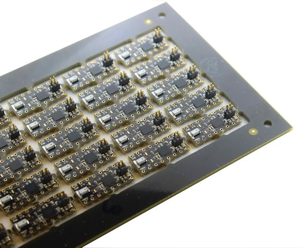

OSHChip V1.0
Features
OSHChip V1.0 is a minature processor board that packs an amazing amount of functionality into the space of a traditional 16 pin DIP package. It is only 0.35” (8.9 mm) wide and 0.78” (19.8 mm) long. Designed specifically for the hobbyist in mind, it features custom IC pins that are exactly what solderless breadboards are designed for. With its 0.3” (7.6 mm) column pin pitch, it can plug into the middle two rows of holes on a breadboard (just like any .3” DIP package device), and the remainder of the connection holes are available for your jumper wires. (unlike other products that cover many of the holes you might want to use.)
OSHChip V1.0 includes the following functional blocks:
- ARM Cortex-M0 32 bit micro processor running at 16 MHz
- 256KB Flash Memory
- 32KB SRAM
- 2.4 GHz Radio supports 3 protocols:
- Bluetooth Low Energy (BLE) / Bluetooth Smart
- Supports communications from OSHChip
to smart phones that support BLE
- Supports communications from OSHChip
- Gazell
- Supports Chip to Chip communications.
- ESB (Enhanced Shock Burst)
- Supports Chip to Chip communications.
- Bluetooth Low Energy (BLE) / Bluetooth Smart
- Built-in antenna, range is 10 to 20 feet, depending
on environment (metal, desks, chairs, …) - Runs from 1.8V to 3.6V . Multiple low power modes
- 14 general purpose I/O pins. All peripherals (except
the ADC) can use any I/O pin - UART
- 10-bit ADC
- Low Power Comparator
- Counter/Timers
- SPI
- I2C
- Temp
- RTC
- Watchdog Timer
- Quadrature Decoder
- AES Encryption
- Random Number Generator.
- 3 On-board LEDs (near top connector), Red Green and Blue.
Buying OSHChip
- OSHChip products are sold in our store that is hosted on Tindie
- The price of OSHChip_V1.0 is $25.00
- Shipping is fixed price regardless of how many you order.
- To program OSHChip_V1.0, you will need an SWD programmer such as OSHChip_CMSIS_DAP_V1.0
Related Information
Resources
- Very quick start:
Blinky program using the online mbed environment - Getting started with GCC and Yotta
- Nordic Semiconductor’s Getting Started Guide (assumes Nordic’s development board, and J-Link programmer)
- Nordic Semiconductor’s Documentation library
- Nordic Semiconductor’s Development Libraries (SDK)
- Nordic Semiconductor’s Developer Zone (User Forum)
- Setting up development with GCC on Mac OS X
- These links are to pages currently being developed
- These links are place holders
At the heart of OSHChip_V1.0 is a System-On-Chip (SOC) manufactured by Nordic Semiconductors. The specific product is the nRF51822
To use OSHChip_V1.0 you will need to become familiar with the documentation provided by Nordic Semiconductor. Because navigating their site can be challenging, start at nRF51822 and underneath the product title, there are a set of tabs, starting with “OVERVIEW” and ending with “DOWNLOADS”. Select the DOWNLOADS tab.
Nordic Semiconductor has split the main documentaion for the nRF51822 into two documents.
-
In the Product Specification it list the specific recources included in the device (for example, how many counter-timer blocks are included) and the timing and power consumption details for all the functional blocks. The Product Specification does not include the detailed programming information for each functional block.
-
In the nRF51 Series Reference Manual which does give the detailed programming information as well as detailed functional operation. It does not reference a specific product.
The reason for the documentation split is that Nordic has another SOC (nRF51422) that has its own product specification, but shares the non- product specific nRF51 Series Reference Manual. Even with this split of documentation, there are several variant of the nRF51822, which differ in the amount of Flash memory and SRAM. OSHChip_V1.0 uses the most advanced variant of the nRF51822, which includes 256 KBytes of Flash and 32 KBytes of SRAM. The specific variant is nRF51822- CFAC-A0.
For each document, the most recent version is listed, and when you select it, the page that is presented gives a link for the most recent document, and all the previous versions. OSHChip_V1.0 uses the nRF51822 described by:
| Document | Version |
|---|---|
| nRF51822 Product Specification | version 3.3 |
| nRF51 Series Reference Manual | version 3.0 |
Open Source
OSHChip_V1.0 is an Open Source Hardware design. It’s right there in the name. You can find all the schematics, bill of materials, printed circuit board design files and the resultant Gerber files here: https://github.com/OSHChip/OSHChip_V1.0_Docs
Navigating the GitHub repository for OSHChip V1.0
The repository contains the design files for OSHChip V1.0
The PCB design files are in the directory Design_Files and were created with Altium Designer Release 10
Since you may not have access to Altium Designer, I have also included all the Gerber files and the Excelon drill file in the directory Gerbers_and_Drill_Files.
In the Other_Files directory, you will find the following:
- OSHChip_V1.0___Schematic.PDF
- OSHChip_V1.0___PCB_Prints.PDF
- OSHChip_V1.0___Assembly_Drawings.PDF
- OSHChip_V1.0___Bill_of_Materials.xls
- OSHChip_V1.0___Bill_of_Materials.PDF
Gallery
